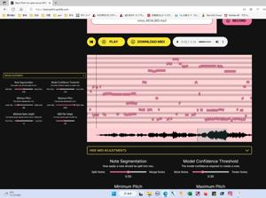

うるがいの話 ある日
最新: 風起花抄（ふうきかしょう）の曲【うるがいの話 ある日】とは 一日だけのプログです
『うるがいの話』の最新一日だけのプログで、通信料が少なく経済的だ。カニの画像をクリックすると全ての日付が載る『うるがいの話』サイトを表示します
|
|
【うるがいの話】 うるがい(ｳﾙｶﾞｲ urugai)とは、『もずくがに』の名前でとても大きくなります。 |
|---|---|
|
|
【カミマヤーの話】 猫のことを方言でマヤーといいます。カミマヤー（kamimayaa）とは、神の猫のことです。 |
|
【たながぁの音楽】 たながぁ（ﾀﾅｶﾞｰ tanagaa）とは手長えびのことで、何種類かあり大きいのは車 エビぐらいになります。 |

|
【ぶながぁの話】 ぶながぁ(ﾌﾞﾅｶﾞｰ bunagaa)とは、赤い髪の毛、赤い身体、そして身長は１ｍ２０ｃｍ ぐらい、川の蟹を食べているの目撃された。場所は沖縄県国頭郡大宜味村のと ある村僕の隣近所に住んでいる爺さんから、聞いた話です。 |
|
|
【ギーマの話】 ギーマ(giima)とは、山原の里山に咲くスズランに似た、 花を付けます。実は食べられます、 気が付くと口の周りが紫になっています。 |
2023年05月17日 (水）風起花抄（ふうきかしょう）の曲
20:47
テレビで録音した曲（ｖｏｉｃｅ＿４６３４．ｍ４ａ）を、楽譜ソフトに展開
してみた。手順はこうである。
１．voice_4634.m4aをmp3へ変換(ＰＣ版iTunesを使う)
録音した曲
２．音量レベルが低いのでノーマルレベルに変換(Audacityを利用)
なお、元の音源にノイズを削除しようと思ったが出来ず。
ただし、ＭＩＤＩを楽譜ソフトのデータに展開したとき低音の
音符があった、それをノイズをみなし、その音符を削除する
３．オーディオからMIDIに変換するサイトSpotify

４．展開したMIDIを楽譜ソフト(musescore3)へ取り込む
キーは正確だと思うが、音符の展開は・・・・
なお、音源の後半は複数の楽器が、加わっているのでさらに複雑に展開
される。
５．取り込んだ楽譜データを、適当に修正する
少し触ってみたものが、これである（音楽のセンスないので）。
楽譜ソフトで再生した
MuseScore3楽譜データ
ダウンロード
２０時２５分 ビットコインの総資産 ￥１０、６０８（↓９１）